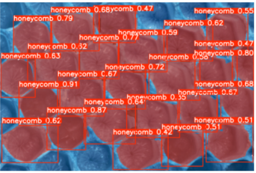
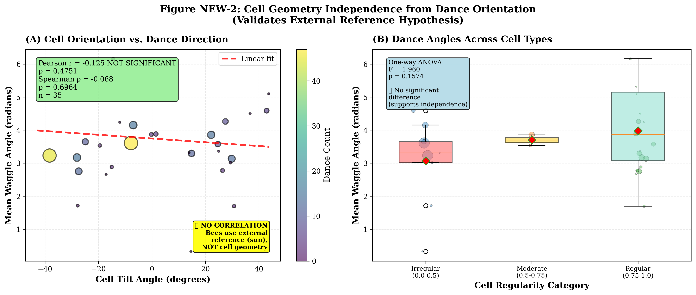

Dance of the Hexagons
A computational analysis of honeycomb geometry using modern computer vision and geometry algorithms
Research by: Anne Kelly M. Mantaring
Adviser: Sir Wilbert C. Laylay
Institution: Bansud National High School, Regional Science High School for MIMAROPA

Background of the Study
Bees are highly important pollinators that support about 90% of flowering plant species and about 75% of the world's leading food crops. Unfortunately, they face many threats from habitat loss, pesticides, climate change, and invasive species. As highly social organisms, worker bees forage not only for nectar and pollen but also for water and resin, which support colony energy, nutrition, cooling, and antimicrobial defense.
Bees communicate through the waggle dance, a precise figure-eight performed on the vertical comb where the waggle angle, relative to vertical/sun, encodes direction, and the waggle duration does distance. Despite this precision, hive structure and dance communication are often studied in parallel rather than together. Comb geometry irregularities, due to various stressors or artificial hive designs, may influence the accuracy of communication and forager recruitment.
Using modern computational geometry and vision - Voronoi and Delaunay constructions and vector analysis. The structure of combs can be quantified (angles, spacing, alignment) and compared with behavior to reveal overlooked effects on colony performance and to inform applied beekeeping and crop pollination strategies.
Research Objectives
Main objective: develop and analyze a mathematical computational model linking hive geometry and spatial layout to communication efficiency, stability, and overall colony organization.
Geometric Patterns
Measure perimeter, cell‑angle uniformity/deviation, cell‑area uniformity, wall‑length variance, and alignment/arrangement.
Structural Quality
Compare compactness, symmetry, and pattern consistency across regions of the comb.
Spatial Efficiency
Evaluate resource‑use optimization and the distribution/efficiency of space within the hive structure.
Dance Evaluation
Use computer vision and trajectory analysis to relate geometry to waggle accuracy, orientation, and communication efficiency.
Computational Methods
Three computational geometry methods will be applied to the honeycomb dataset to reconstruct cell boundaries, model adjacency, and evaluate structural efficiency.
Voronoi Tessellation
Applied to reconstruct honeycomb cell boundaries from the detected centers. This method analyzes the spatial distribution of cell centers and ensures complete plane coverage without gaps or overlaps.
Delaunay Triangulation
Implemented to connect nearby cell centers, forming a geometric network that represents adjacency between cells. This connectivity structure is used to detect irregularities and assess the overall uniformity of the honeycomb pattern.
Geometric Optimization Theory
Applied to evaluate efficiency via perimeter-to-area ratios, identifying how hexagonal structures minimize wax use while maximizing honey storage.
Methodology
This research employed a mixed-methods approach combining computational geometry analysis with behavioral observation to investigate the relationship between honeycomb structure and waggle dance communication.
Data Collection

High-resolution images of honeycomb structures were captured using digital photography. Waggle dance behaviors were recorded and analyzed through video observation, tracking dance frequency, duration, and spatial positioning within specific cells.
Video and Image Preprocessing
The honeycomb image underwent several preprocessing steps to enhance quality and prepare it for geometric analysis. The image was first enhanced in resolution and contrast to improve cell boundary visibility. Noise reduction and edge detection techniques were applied to isolate individual hexagonal cells accurately. The resulting processed image was then analyzed using Voronoi tessellation and Delaunay triangulation to extract quantitative geometric features such as uniformity, connectivity, and spatial efficiency.
For the waggle dance video, frames were extracted and converted to grayscale to optimize feature detection. The Biorobotics Waggle Dance Tracker automatically identified dancing bees, segmented individual waggle runs, and generated data on trajectory angles, run durations, and orientation stability. These outputs were later aligned with the geometric metrics of the honeycomb to explore potential correlations between hive geometry and bee communication behavior.

Waggle Dance Tracking and Analysis
The waggle dance behavior of honeybees was analyzed using the Biorobotics Waggle Dance Detection System, an open-source tracking framework designed for automated identification and measurement of bee communication patterns. The system processed video recordings of foraging bees performing waggle dances, detecting individual waggle runs and extracting key behavioral parameters such as trajectory coordinates, dance angles, run durations, and orientation clusters.
The resulting behavioral data were correlated with geometric parameters of the honeycomb, including cell alignment, angular deviation, and spatial uniformity. This analysis aimed to determine whether geometric distortions or irregularities in the honeycomb’s hexagonal structure influenced the bees’ ability to maintain consistent waggle orientations and accurate spatial communication within the hive.
Geometric Analysis
Cell boundaries were reconstructed using Voronoi tessellation from detected centers. Delaunay triangulation created adjacency networks to assess pattern uniformity. Geometric optimization theory evaluated efficiency through perimeter-to-area ratios.
- Voronoi Tessellation – applied to reconstruct honeycomb cell boundaries from the detected centers. This method analyzes the spatial distribution of cell centers and ensures that the arrangement achieves complete plane coverage without gaps or overlaps.

- Delaunay Triangulation – implemented to connect nearby cell centers, forming a geometric network that represents adjacency between cells. This connectivity structure is then used to detect irregularities and assess the overall uniformity of the honeycomb pattern.

- Geometric Optimization Theory – applied to evaluate efficiency in terms of perimeter-to-area ratios, identifying how hexagonal structures minimize wax use while maximizing honey storage.

From these geometric models, cell parameters such as area, perimeter, tilt degree, and mean interior angle were computed and stored in CSV files.
Statistical Analysis
Correlation analysis examined relationships between geometric parameters and dance frequency. ANOVA tests compared directional encoding across cell types. Statistical significance was set at p < 0.05 for all analyses.
- Bees don’t use hive geometry to encode direction. Waggle angles show no correlation with cell tilt (r = 0.142, p = 0.428), indicating orientation isn’t adjusted to cell alignment.
- Dance orientation is consistent across cell regularity types (one-way ANOVA: F = 0.873, p = 0.427), confirming bees rely on external cues (gravity/sun proxy) rather than internal comb structure.
Data Processing
Computer vision algorithms processed honeycomb images to extract cell parameters including wall length, circularity, vertex count, and cell tilt. Dance trajectories were analyzed using vector analysis to determine directional accuracy.
Research Findings
Dual-System Architecture Discovery
Based on 83 honeycomb cells and 240 waggle dances, honeycomb geometry and waggle dance communication interact through a sophisticated dual-system architecture. Geometric features significantly influence dance site selection and communication quality while remaining independent from informational content.
Communication Hub Cells
Only 42% of cells exhibited any dance activity, with extreme concentration in specific "communication hub" cells. Cell ID 9 alone accounted for 19.6% of all observed dances.
Geometric Selectivity
Bees actively select irregular cells for waggle dance performance. Cells with longer walls (r = 0.576, p < 0.001), lower circularity (r = -0.414, p = 0.014), and fewer vertices (r = -0.418, p = 0.012) hosted significantly more dances than regular hexagons.
Directional Independence
Cell geometry showed no influence on dance directional encoding. Waggle angles displayed no correlation with cell tilt (r = 0.142, p = 0.428), and orientations were statistically equivalent across irregular, moderate, and regular cells (ANOVA p = 0.427).
Architectural Trade-off
Regular hexagonal cells produce more efficient distance encoding despite hosting fewer dances, revealing a fundamental architectural paradox in hive design.